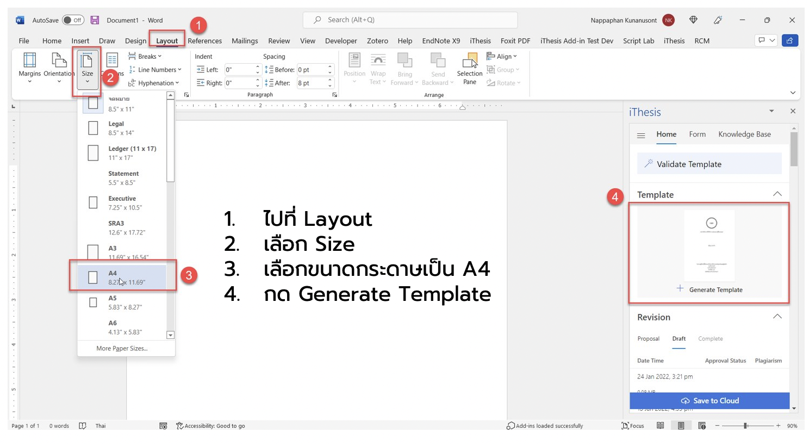
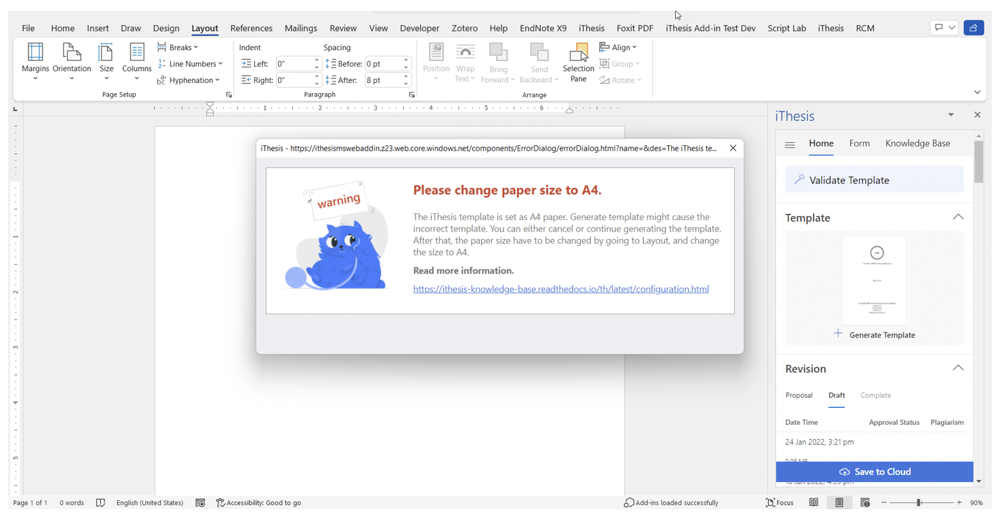
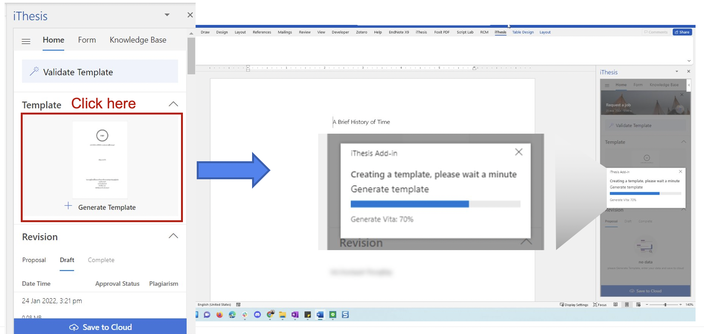
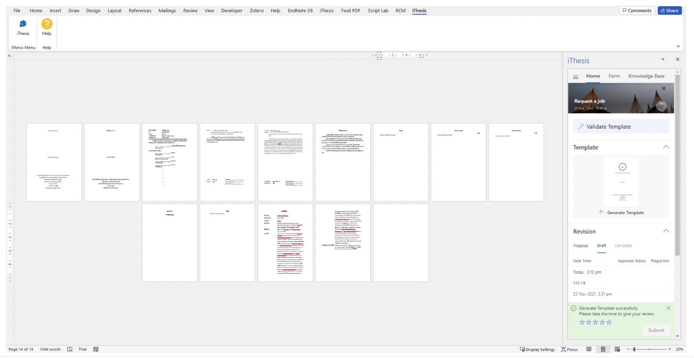

Generate Template¶
การตั้งค่าหน้ากระดาษก่อนจะทำการ Generate template¶
ไปที่ Layout
เลือก Size
เลือกขนาดกระดาษเป็น A4
กด Generate Template

Note
กรณีไม่ได้ตั้งค่าหน้ากระดาษก่อนจะมีข้อความแจ้งเตือน Please Change Paper Size to A4

การสร้างรูปเล่มวิทยานิพนธ์ Generate Template¶

เริ่มต้นใช้งานให้ทำการสร้างรูปเล่มบนเอกสารเปล่า จากนั้นจึงเริ่มพิมพ์วิทยานิพนธ์ตามรูปแบบ หรือนำที่พิมพ์แล้วมาวาง
